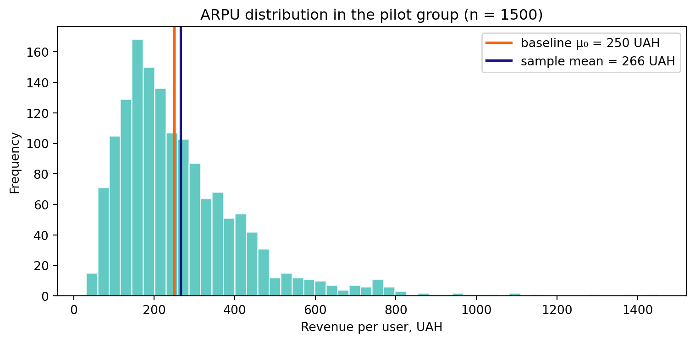
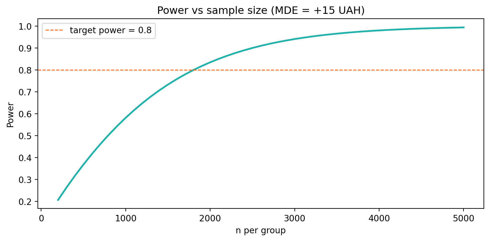
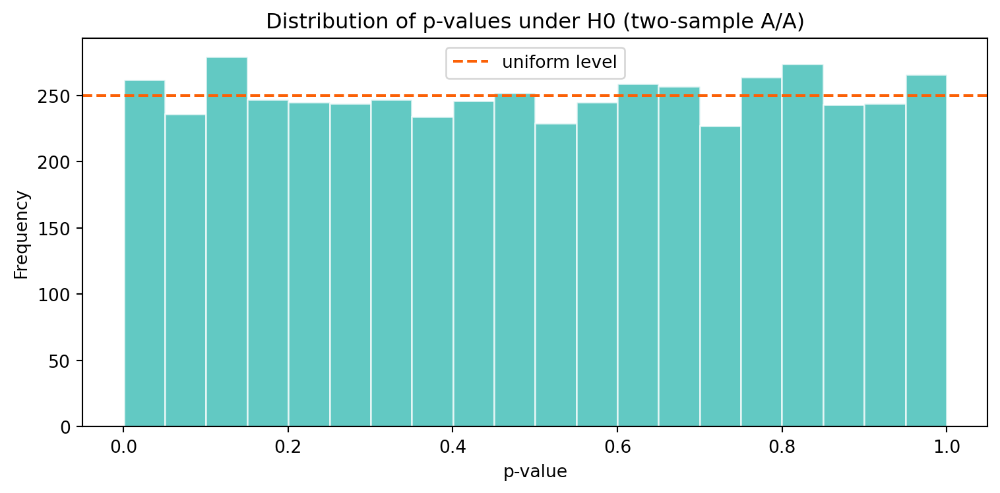

In the lecture we built the \(t\)-test step by step: we hit the problem of an unknown \(\sigma^2\), replaced it with the estimate \(S^2\), discovered that the statistic \(T(X)\) then follows not a normal but a Student’s distribution\(t_{n-1}\); we covered the \(t'\)-test vs the \(t\)-test, the confidence interval, the large-sample case via the CLT + Slutsky’s theorem, the two-sample \(t\)-test, and the MDE.
Today we assemble everything into one tool — our own my_t_test() function, and then its “two-sample twin” my_two_sample_t_test(), similar in spirit to scipy.stats.ttest_ind.
NoteGround rules
Do not use the ready-made ttest_1samp / ttest_ind — write everything yourself via scipy.stats.t (t.cdf, t.sf, t.ppf). The built-in function is for verification only.
Each version is a small extension of the previous one.
Every final step (Final, full cycle) reuses earlier functions rather than duplicating them.
After each version there is a “Your turn” mini-task.
1 Case study: ARPU of the GreenBowl delivery app
We work on the same GreenBowl as in Practice 3, but the metric is now continuous. The product team has revamped the menu (added combo deals) and wants to know whether the average revenue per user per week (ARPU) went up.
Unit of observation: one user per week.
Success metric: the user’s revenue in UAH — continuous, positive, heavily skewed (most users place small orders, a few “whales” form a long right tail).
Baseline:\(\mu_0 = 250\) UAH (3 months of historical data).
Break-even point:+5 UAH. Below this, the extra revenue does not cover the cost of rebuilding the menu and logistics — the feature runs “in the red”. This is the decision threshold for ship/no-ship.
Design MDE:+15 UAH. The smallest effect we consider a “clear win” and plan the sample size around (we want a \(\geq 80\%\) chance of catching it). This is the planning threshold, not the decision one.
Direction: we only care about an effect “up” → one-sided test.
Significance level:\(\alpha = 0.05\).
ImportantWhy these are TWO different numbers (not one)
The temptation is to take a single number “15” and use it both to plan the sample and to make the decision. That is a trap: planning and decision answer different questions and cost differently.
break-even (+5) says when the feature pays off — this is economics (rebuild cost ÷ user base). The ship decision is made relative to it.
design MDE (+15) says which effect we want to confidently catch — we size \(N\) for it. Catching a smaller effect is more expensive (\(n \propto 1/\text{effect}^2\)), so we spend resources on a “clear win”.
If you mix the roles — e.g. require the CI lower bound to cross +15 — you will reject features that are in fact profitable (effect between +5 and +15). We will come back to this mistake in the Final.
NoteWhy a \(t\)-test, not a \(Z\)-test?
In Practice 3 the metric was a proportion, and the variance was “self-describing”: \(\sigma^2 = \mu_0(1-\mu_0)\). Here the metric is money, and the variance cannot be known in advance: it has to be estimated from the data as \(S^2\). It is exactly this substitution \(\sigma^2 \to S^2\) that turns a \(Z\)-test into a \(t\)-test.
Let’s generate a realistic skewed ARPU. The distribution is lognormal (the classic model for “money per user”):
def arpu_sample(true_mean, n, sigma=0.6):"""Lognormal ARPU sample with a given mean true_mean.""" mu = np.log(true_mean) - sigma**2/2return np.random.lognormal(mean=mu, sigma=sigma, size=n)np.random.seed(73)pilot = arpu_sample(true_mean=268, n=1500) # pilot after the menu revampfig, ax = plt.subplots(figsize=(8, 4))ax.hist(pilot, bins=50, color=turquoise, alpha=0.7, edgecolor="white")ax.axvline(250, color=red, lw=2, label="baseline μ₀ = 250 UAH")ax.axvline(pilot.mean(), color=blue, lw=2, label=f"sample mean = {pilot.mean():.0f} UAH")ax.set_xlabel("Revenue per user, UAH")ax.set_ylabel("Frequency")ax.set_title("ARPU distribution in the pilot group (n = 1500)")ax.legend()plt.tight_layout()plt.show()print(f"Mean = {pilot.mean():.1f} UAH, S = {pilot.std(ddof=1):.1f} UAH, n = {len(pilot)}")

Mean = 265.9 UAH, S = 166.8 UAH, n = 1500
The distribution is clearly not normal — skewed to the right. Keep this in mind: it becomes critical in Version 3.
2 Version 1 — \(t\)-statistic and p-value
The simplest version: given a sample and \(\mu_0\), return the one-sided \(p\)-value for \(H_1: \mu > \mu_0\).
\[
T = \sqrt{n}\,\dfrac{\overline X - \mu_0}{S},\qquad
T \overset{H_0}{\sim} t_{n-1},\qquad
p\text{-value} = 1 - F_{t_{n-1}}(T)
\]
\(p \ll 0.05\) — strong evidence that ARPU rose above the historical 250 UAH. But let’s not celebrate yet — first we look at the size of the effect (Version 4) and whether it is worth the money (business MDE = +15 UAH).
TipYour turn 1
Generate a series of pilots with a true mean of exactly \(\mu_0 = 250\) (i.e. no effect) and look at the resulting \(p\)-values. How often is \(p \leq 0.05\)?
Fix np.random.seed(1) and find the sample mean (at \(n=1500\), \(S \approx 165\)) at which \(p\) crosses \(0.05\). Translate it into a lift over \(\mu_0\).
Exploratory. Increase \(n\) fourfold (1500 → 6000). By what factor does the critical lift shrink — four or \(\sqrt 4 = 2\)? Why?
NoteSolution 1
# (1) no effect — p should be roughly uniform; p<=0.05 ~ 5% of the timenp.random.seed(1)ps = [my_t_test(arpu_sample(250, 1500), 250) for _ inrange(2000)]print(f"Fraction p <= 0.05 with no effect: {np.mean(np.array(ps) <=0.05):.3f}")# (2) critical lift: T = z* => mean = mu0 + t_crit * S/sqrt(n)n, S =1500, 165t_crit = stats.t.ppf(0.95, df=n -1)crit_mean =250+ t_crit * S / np.sqrt(n)print(f"Critical mean ≈ {crit_mean:.2f} UAH → lift ≈ {crit_mean -250:+.2f} UAH")# (3) fourfold larger ncrit_mean_4n =250+ t_crit * S / np.sqrt(4* n)print(f"At n=6000: critical lift ≈ {crit_mean_4n -250:+.2f} UAH "f"(shrank by {(crit_mean-250)/(crit_mean_4n-250):.1f}x)")
Fraction p <= 0.05 with no effect: 0.043
Critical mean ≈ 257.01 UAH → lift ≈ +7.01 UAH
At n=6000: critical lift ≈ +3.51 UAH (shrank by 2.0x)
Interpretation. The critical lift scales as \(1/\sqrt{n}\), because \(SE = S/\sqrt{n}\). So a fourfold increase in \(n\) halves the critical lift by 2x, not 4x. This is the same precision-vs-cost trade-off as in Practice 3.
3 Version 2 — three alternatives
Marketing wants to catch a drop in ARPU (one-sided less), finance sometimes wants “did anything change at all” (two-sided). We add an alternative parameter.
def my_t_test(sample, mu0, alternative="greater"):"""Version 2. Adds alternative ∈ {greater, less, two-sided}.""" sample = np.asarray(sample, dtype=float) n =len(sample) df = n -1 se = sample.std(ddof=1) / np.sqrt(n) t_stat = (sample.mean() - mu0) / seif alternative =="greater":return stats.t.sf(t_stat, df=df)if alternative =="less":return stats.t.cdf(t_stat, df=df)if alternative =="two-sided":return2* stats.t.sf(abs(t_stat), df=df)raiseValueError(f"Unknown alternative: {alternative!r}")
for alt in ("greater", "less", "two-sided"): p = my_t_test(pilot, mu0=250, alternative=alt)print(f"alternative={alt:>10s} → p-value = {p:.5f}")
As with the \(Z\)-test: the one-sided \(p\)-value equals half the two-sided one — because Student’s distribution is symmetric about zero. This follows from the formula \(2\cdot(1 - F_t(|T|))\).
TipYour turn 2
Verify that on the pilot p_two_sided == 2 · p_greaterexactly.
Generate a sample where \(\overline X < \mu_0\) (e.g. arpu_sample(235, 1500)). Does the equality with p_greater still hold? Try 2 · p_less.
Derive the general formula for \(p_{\text{two}}\) in terms of \(p_{\text{greater}}\) and \(p_{\text{less}}\).
General formula:\(p_{\text{two-sided}} = 2 \cdot \min(p_{\text{greater}},\ p_{\text{less}})\). We always take the tail in which the observation is “more extreme”. Unlike the binomial in Practice 3, the equality here is exact for either direction — the \(t\) distribution is symmetric.
4 Version 3 — \(t'\)-test vs \(t\)-test (use_normal)
In the lecture we saw: if instead of \(t_{n-1}\) you use \(\mathcal{N}(0,1)\) (this is the \(t'\)-test), then on a small sample the result gets distorted. We add a use_normal flag and check by simulation.
def my_t_test(sample, mu0, alternative="greater", use_normal=False):"""Version 3. use_normal=True → t'-test (N(0,1) quantiles instead of t).""" sample = np.asarray(sample, dtype=float) n =len(sample) df = n -1 se = sample.std(ddof=1) / np.sqrt(n) t_stat = (sample.mean() - mu0) / se dist = stats.norm if use_normal else stats.t kw = {} if use_normal else {"df": df}if alternative =="greater":return dist.sf(t_stat, **kw)if alternative =="less":return dist.cdf(t_stat, **kw)if alternative =="two-sided":return2* dist.sf(abs(t_stat), **kw)raiseValueError(f"Unknown alternative: {alternative!r}")
The key question: how often does each criterion wrongly reject \(H_0\) when there is no effect (FPR). We simulate under \(H_0\) (true mean \(= \mu_0\)) for different distributions and sample sizes.
def fpr(generator, n, M=20000, alpha=0.05):"""Empirical FPR of the t-test and t'-test under H0 (one-sided greater).""" np.random.seed(7) rej_t = rej_tprime =0for _ inrange(M): s = generator(n)if my_t_test(s, 250, "greater", use_normal=False) <= alpha: rej_t +=1if my_t_test(s, 250, "greater", use_normal=True) <= alpha: rej_tprime +=1return rej_t / M, rej_tprime / Mnormal_gen =lambda n: np.random.normal(250, 160, n) # normal dataskew_gen =lambda n: arpu_sample(250, n) # skewed data (our ARPU)print(f"{'data':>10s}{'n':>5s}{'t-FPR':>7s}{'t′-FPR':>7s}")print(f"{'normal':>10s}{15:>5d}{fpr(normal_gen, 15)[0]:>7.3f}{fpr(normal_gen, 15)[1]:>7.3f}")print(f"{'skewed':>10s}{15:>5d}{fpr(skew_gen, 15)[0]:>7.3f}{fpr(skew_gen, 15)[1]:>7.3f}")print(f"{'skewed':>10s}{200:>5d}{fpr(skew_gen, 200)[0]:>7.3f}{fpr(skew_gen, 200)[1]:>7.3f}")print(f"{'skewed':>10s}{1000:>5d}{fpr(skew_gen, 1000)[0]:>7.3f}{fpr(skew_gen, 1000)[1]:>7.3f}")
data n t-FPR t′-FPR
normal 15 0.050 0.061
skewed 15 0.017 0.024
skewed 200 0.035 0.036
skewed 1000 0.040 0.041
WarningWhat the table shows
Normal data, \(n=15\): the \(t\)-test hits exactly \(0.05\) (exact!), while the \(t'\)-test inflates the FPR to \(\approx 0.06\) — it “finds” effects more often than allowed. This is why the \(t\)-test is safer on small samples.
Skewed data, \(n=15\):both criteria are off (here the other way — too conservative in the right tail). A small \(n\) + non-normality = the test cannot be trusted, whichever quantile you use.
Skewed data, \(n \uparrow\): the FPR of both approaches \(0.05\). This is the CLT + Slutsky’s theorem in action: on a large sample \(T(X)\) becomes normal even for skewed data, and the \(t\) vs \(t'\) difference vanishes.
NoteTakeaway (as in the lecture)
The \(t\)-test is never “more optimistic” than the \(t'\)-test: the heavier tails of \(t_{n-1}\) give a larger \(p\)-value → smaller FPR. So the default is always the \(t\)-test. But neither rescues you from non-normality on a small sample — there you need either a large \(n\) or non-parametric methods (bootstrap, Mann–Whitney test).
TipYour turn 3
For normal data, find the smallest \(n\) at which \(|t\text{-FPR} - t'\text{-FPR}| < 0.005\). From which \(n\) does the \(t\) vs \(t'\) choice stop mattering?
Repeat the simulation for the two-sided test. Does the “\(t'\) inflates the FPR” effect persist on normal data?
Exploratory. Increase the skewness (sigma=1.0 in arpu_sample). How much \(n\) is now needed for the skewed FPR to reach \(0.05\)? How does this relate to “sufficient \(n\)” for the CLT from the \(Z\)-test lecture?
NoteSolution 3
# (1) on normal data the t vs t' difference vanishes as n growsprint("Normal data, |t-FPR − t′-FPR|:")for n in (15, 30, 60, 120, 250): a, b = fpr(normal_gen, n, M=20000)print(f" n={n:>4d} t={a:.3f} t′={b:.3f} |Δ|={abs(a-b):.3f}")
By \(n \approx 60\) the difference drops below \(0.005\): \(t_{59} \approx
\mathcal{N}(0,1)\), so on normal data the quantile choice becomes cosmetic (just as in the lecture).
The two-sided test behaves the same — \(t'\) is systematically a bit more liberal on small \(n\).
The more skewed the distribution, the larger the \(n\) the CLT needs. With sigma=1.0 even \(n=1000\) may not bring the FPR up to \(0.05\) — this is the same “sufficient \(n\)” idea from the \(Z\)-test lecture: the heavier the tail, the slower the convergence to normality.
5 Version 4 — confidence interval for \(\mu\)
Instead of yes/no, the business wants a range for the true ARPU. We use the \(t\)-quantile:
\[
\overline X \pm t_{n-1,\,1-\alpha/2}\,\dfrac{S}{\sqrt n}
\]
def my_t_test(sample, mu0, alternative="greater", use_normal=False, alpha=0.05, conf_int=False):""" Version 4. conf_int=True → returns a dict with p-value and CI. The CI type matches alternative (same alpha budget): two-sided → [X̄ − t·SE, X̄ + t·SE] greater → one-sided lower bound: [X̄ − t·SE, +∞) less → one-sided upper bound: (−∞, X̄ + t·SE] """ sample = np.asarray(sample, dtype=float) n =len(sample) df = n -1 mean = sample.mean() se = sample.std(ddof=1) / np.sqrt(n) t_stat = (mean - mu0) / se dist = stats.norm if use_normal else stats.t kw = {} if use_normal else {"df": df}if alternative =="greater": p_value = dist.sf(t_stat, **kw)elif alternative =="less": p_value = dist.cdf(t_stat, **kw)elif alternative =="two-sided": p_value =2* dist.sf(abs(t_stat), **kw)else:raiseValueError(f"Unknown alternative: {alternative!r}")ifnot conf_int:return p_valueif alternative =="two-sided": crit = dist.ppf(1- alpha /2, **kw) ci_low = mean - crit * se ci_high = mean + crit * seelif alternative =="greater": crit = dist.ppf(1- alpha, **kw) ci_low = mean - crit * se ci_high = np.infelse: # less crit = dist.ppf(1- alpha, **kw) ci_low =-np.inf ci_high = mean + crit * sereturn {"mean": mean, "t_stat": t_stat, "df": df,"p_value": p_value, "ci_low": ci_low, "ci_high": ci_high}
Point estimate of ARPU ≈ 266 UAH (lift ≈ +16 UAH).
The two-sided CI describes uncertainty in both directions — for reporting.
The one-sided lower bound says: “ARPU is at least this much with 95% confidence”. If it is above the break-even threshold \(\mu_0 + \text{breakeven} = 255\) UAH, that is a signal in favour of shipping, but on its own only a necessary, not sufficient condition. The full ship/no-ship decision (three-zone rule + expected value) we assemble in the Final.
TipYour turn 4
Run my_t_test(pilot, 250, "less", conf_int=True). What does the CI look like, and does it make sense for this data?
Compare the width of the one-sided and two-sided 95% CI. Which is tighter and why?
Exploratory. Compare the \(t\)-CI (use_normal=False) with the \(t'\)-CI (use_normal=True) on the pilot (\(n=1500\)) and on a subsample of \(n=12\). Where is the difference noticeable, and where not?
NoteSolution 4
# (1)+(2)r_less = my_t_test(pilot, 250, "less", conf_int=True)print(f"alt='less': μ ≤ {r_less['ci_high']:.1f} UAH (data points up — bound is uninformative)")w_two = res_two['ci_high'] - res_two['ci_low']print(f"Two-sided lower bound = {res_two['ci_low']:.1f}, one-sided = {res_one['ci_low']:.1f}")print("One-sided is tighter: the whole α=0.05 goes into one tail (t_{0.95} < t_{0.975}).")# (3) t-CI vs t'-CIfor n in (1500, 12): sub = pilot[:n] a = my_t_test(sub, 250, "two-sided", use_normal=False, conf_int=True) b = my_t_test(sub, 250, "two-sided", use_normal=True, conf_int=True)print(f"n={n:>4d}: t-CI width={a['ci_high']-a['ci_low']:6.1f}, "f"t′-CI width={b['ci_high']-b['ci_low']:6.1f}")
alt='less': μ ≤ 273.0 UAH (data points up — bound is uninformative)
Two-sided lower bound = 257.4, one-sided = 258.8
One-sided is tighter: the whole α=0.05 goes into one tail (t_{0.95} < t_{0.975}).
n=1500: t-CI width= 16.9, t′-CI width= 16.9
n= 12: t-CI width= 369.0, t′-CI width= 328.6
Interpretation. At \(n=1500\) the \(t\)- and \(t'\)-intervals are almost identical (\(t_{1499}\approx\mathcal N(0,1)\)). At \(n=12\) the \(t'\)-interval is noticeably narrower — but that is false confidence: it ignores the uncertainty in estimating \(S\), so its real coverage is below the nominal 95%.
From one sample to two
my_t_test works when there is a fixed baseline — e.g. comparing the current week against the historical ARPU. But an honest A/B test runs two cohorts at once, and both carry noise and their own variance.
We build a parallel function my_two_sample_t_test. The old function does not disappear — it stays for baseline monitoring.
6 Version 5 — two-sample \(t\)-test (Welch + pooled)
In the lecture there were two formulas depending on whether the variances are equal. Welch (does not assume \(\sigma^2_A = \sigma^2_B\)) is the safe default:
\[
T = \dfrac{\overline A - \overline B}{\sqrt{S^2_A/n_A + S^2_B/n_B}},\qquad
\nu = \dfrac{\left(S^2_A/n_A + S^2_B/n_B\right)^2}
{\dfrac{(S^2_A/n_A)^2}{n_A-1} + \dfrac{(S^2_B/n_B)^2}{n_B-1}}
\]
def my_two_sample_t_test(a, b, alternative="two-sided", equal_var=False, alpha=0.05, conf_int=False):""" Two-sample t-test on the difference of means. Convention: T = (Ā − B̄)/SE; alternative is about a − b. equal_var=False → Welch (default); True → pooled (equal variances). """ a = np.asarray(a, dtype=float) b = np.asarray(b, dtype=float) na, nb =len(a), len(b) ma, mb = a.mean(), b.mean() va, vb = a.var(ddof=1), b.var(ddof=1) diff = ma - mbif equal_var: sp2 = ((na -1) * va + (nb -1) * vb) / (na + nb -2) se = np.sqrt(sp2 * (1/ na +1/ nb)) df = na + nb -2else: se = np.sqrt(va / na + vb / nb) df = (va / na + vb / nb) **2/ ( (va / na) **2/ (na -1) + (vb / nb) **2/ (nb -1)) t_stat = diff / seif alternative =="greater": p_value = stats.t.sf(t_stat, df=df)elif alternative =="less": p_value = stats.t.cdf(t_stat, df=df)elif alternative =="two-sided": p_value =2* stats.t.sf(abs(t_stat), df=df)else:raiseValueError(f"Unknown alternative: {alternative!r}")ifnot conf_int:return p_valueif alternative =="two-sided": crit = stats.t.ppf(1- alpha /2, df=df) ci_low, ci_high = diff - crit * se, diff + crit * seelif alternative =="greater": crit = stats.t.ppf(1- alpha, df=df) ci_low, ci_high = diff - crit * se, np.infelse: # less crit = stats.t.ppf(1- alpha, df=df) ci_low, ci_high =-np.inf, diff + crit * sereturn {"diff": diff, "se": se, "t_stat": t_stat, "df": df,"p_value": p_value, "ci_low": ci_low, "ci_high": ci_high}
6.1 Demo: an honest GreenBowl A/B
Control — the old menu, Test — the new one. We deliberately pick an effect at the edge of the business MDE to get a real ship/no-ship dilemma.
np.random.seed(2026)control = arpu_sample(250, 2500) # old menutest = arpu_sample(264, 2500) # new menu# Convention: a = test, b = control → "greater" means test > controlres = my_two_sample_t_test(test, control, alternative="greater", equal_var=False, conf_int=True)print(f"ARPU control = {control.mean():.1f} UAH")print(f"ARPU test = {test.mean():.1f} UAH")print(f"lift = {res['diff']:+.1f} UAH (Welch df = {res['df']:.0f})")print(f"t = {res['t_stat']:.3f}, p-value = {res['p_value']:.5f}")print(f"95% one-sided lower bound for the lift: ≥ {res['ci_low']:+.2f} UAH")
ARPU control = 259.6 UAH
ARPU test = 271.4 UAH
lift = +11.8 UAH (Welch df = 4997)
t = 2.311, p-value = 0.01043
95% one-sided lower bound for the lift: ≥ +3.41 UAH
WarningRead the result carefully
Test:\(p < 0.05\) → we reject \(H_0\). The lift is statistically significant.
Lift ≈ +12 UAH — above the break-even point +5 UAH; but the one-sided lower bound ≈ +3 UAH — below break-even.
PM dilemma (grey zone): the point estimate is profitable, yet we are not sure — the true lift might be just +3 UAH, below break-even. We compare against break-even +5, not against design-MDE +15: so this is not “the effect is too small”, but an honest “probably profitable, but the CI still covers break-even”. Decision: collect more data (my_ab_report will say how much) or knowingly take the risk. The quantitative answer “how likely it is profitable” we give in the Final via \(P(\text{effect} \geq \text{break-even})\).
6.2 Cross-check with scipy
ref = stats.ttest_ind(test, control, alternative="greater", equal_var=False)print(f"scipy: t = {ref.statistic:.4f}, p = {ref.pvalue:.5f}")print(f"my code: t = {res['t_stat']:.4f}, p = {res['p_value']:.5f}")
scipy: t = 2.3112, p = 0.01043
my code: t = 2.3112, p = 0.01043
The numbers match — the implementation is correct.
6.3 Welch vs pooled
# Artificial: a small group with large variance + a large one with small variancenp.random.seed(11)small_hi_var = arpu_sample(260, 60, sigma=0.9) # n=60, large spreadbig_lo_var = arpu_sample(250, 3000, sigma=0.3) # n=3000, small spreadp_welch = my_two_sample_t_test(small_hi_var, big_lo_var, "two-sided", equal_var=False)p_pooled = my_two_sample_t_test(small_hi_var, big_lo_var, "two-sided", equal_var=True)df_welch = my_two_sample_t_test(small_hi_var, big_lo_var, "two-sided", equal_var=False, conf_int=True)["df"]print(f"Welch: p = {p_welch:.4f} (df ≈ {df_welch:.0f})")print(f"pooled: p = {p_pooled:.4f} (df = {len(small_hi_var)+len(big_lo_var)-2})")
Welch: p = 0.3732 (df ≈ 59)
pooled: p = 0.0453 (df = 3058)
NoteWhy Welch is the default
When the variances and group sizes differ, the pooled formula underestimates\(SE\) and gives false confidence (smaller \(p\)). Welch automatically “penalises” the degrees of freedom (here \(df\) drops from ~3058 to a few dozen) and protects against false positives. Pooled is justified only when there are strong reasons to believe the variances are equal.
TipYour turn 5
On the demo A/B compare Welch and pooled. Here the group sizes are equal (\(n_A = n_B = 2500\)) — how close are the \(p\)-values? Why is the difference small at equal \(n\) even with unequal variances?
Shrink the test group to \(n=200\) at the same lift. How do the \(p\)-value and Welch \(df\) change?
Exploratory. Plot Welch \(df\) as a function of the variance ratio \(S^2_A/S^2_B \in [0.1,\ 10]\) at fixed \(n_A=n_B=500\). When is \(df\) smallest?
NoteSolution 5
# (1) equal n: Welch ≈ pooledpw = my_two_sample_t_test(test, control, "greater", equal_var=False)pp = my_two_sample_t_test(test, control, "greater", equal_var=True)print(f"Equal n=2500: Welch p={pw:.5f}, pooled p={pp:.5f} → nearly identical")# (2) small test groupnp.random.seed(99)test_small = arpu_sample(264, 200)r = my_two_sample_t_test(test_small, control, "greater", equal_var=False, conf_int=True)print(f"n_test=200: lift={r['diff']:+.1f}, p={r['p_value']:.4f}, Welch df={r['df']:.0f}")# (3) Welch df vs variance ratioprint("\nS²_A/S²_B → Welch df (n_A=n_B=500):")for ratio in (0.1, 0.5, 1, 2, 10): va, vb, n = ratio, 1.0, 500 df = (va/n + vb/n)**2/ ((va/n)**2/(n-1) + (vb/n)**2/(n-1))print(f" {ratio:>4} → df ≈ {df:.0f}")
At equal\(n\) Welch and pooled almost coincide: the formulas diverge mainly under unequal group sizes. So in a classic 50/50 A/B the difference is minimal.
A smaller test group → wider \(SE\), larger \(p\), smaller Welch \(df\) (precision is set by the smaller group — just like the unbalanced effect in Practice 3).
Welch \(df\) is largest at equal variances (\(\approx n_A+n_B-2\)) and drops when one variance dominates. This is the “penalty” for heteroscedasticity.
7 Version 6 — power and sample-size planning
For planning we use the normal approximation (as in the lecture — large sample). For a two-sample test with equal \(n\) and similar variances \(SE_{\text{diff}} \approx S\sqrt{2/n}\).
def my_two_sample_t_power(mean_diff, sd, n, alpha=0.05, alternative="greater"):"""Power of the two-sample t-test (normal approximation, equal n).""" se = sd * np.sqrt(2/ n)if alternative in ("greater", "less"): z_a = stats.norm.ppf(1- alpha)return stats.norm.cdf(abs(mean_diff) / se - z_a)if alternative =="two-sided": z_a = stats.norm.ppf(1- alpha /2)return (stats.norm.cdf(mean_diff / se - z_a) + stats.norm.cdf(-mean_diff / se - z_a))raiseValueError(f"Unknown alternative: {alternative!r}")def plan_t_experiment(sd, mde, alpha=0.05, target_power=0.8, alternative="greater", n_lo=5, n_hi=1_000_000):"""How many users per group are needed to detect an effect mde. Bisection."""if my_two_sample_t_power(mde, sd, n_hi, alpha, alternative) < target_power:returnNonewhile n_hi - n_lo >1: n_mid = (n_lo + n_hi) //2if my_two_sample_t_power(mde, sd, n_mid, alpha, alternative) >= target_power: n_hi = n_midelse: n_lo = n_midreturn n_hi
# We estimate S from the collected A/B datasd_hat = np.concatenate([control, test]).std(ddof=1)print(f"S ≈ {sd_hat:.1f} UAH\n")# Scenario A: marketing guarantees N per group. What can we detect?for n in (500, 1000, 2500, 5000): pw = my_two_sample_t_power(15, sd_hat, n, alternative="greater")print(f"n = {n:>5d} → power(MDE=+15 UAH) = {pw:.3f}")# Scenario B: how many are needed to detect +15 UAH with power=0.8N = plan_t_experiment(sd_hat, mde=15, target_power=0.8, alternative="greater")print(f"\nTo detect +15 UAH with power=0.8 you need: {N} users per group")
S ≈ 181.2 UAH
n = 500 → power(MDE=+15 UAH) = 0.368
n = 1000 → power(MDE=+15 UAH) = 0.582
n = 2500 → power(MDE=+15 UAH) = 0.900
n = 5000 → power(MDE=+15 UAH) = 0.994
To detect +15 UAH with power=0.8 you need: 1805 users per group
ImportantKey trade-off
The formula shows \(\text{MDE} \propto 1/\sqrt{n}\), so \(n \propto
1/\text{MDE}^2\). Wanting an effect half the size means four times the users and waiting time.
TipYour turn 6
Plot power vs \(n\) (from 200 to 5000 per group) for MDE = +15 UAH. Find the smallest \(n\) where power \(\geq 0.8\) and check it against plan_t_experiment.
Check plan_t_experiment against the closed-form formula for \(n\). Is bisection even necessary?
Exploratory. How does \(N\) change if you halve the MDE (15 → 7.5 UAH)? By 2, 4, or 8 times?
NoteSolution 6
ns = np.arange(200, 5001, 100)powers = [my_two_sample_t_power(15, sd_hat, n, alternative="greater") for n in ns]fig, ax = plt.subplots(figsize=(8, 4))ax.plot(ns, powers, color=turquoise, lw=2)ax.axhline(0.80, color=red, linestyle="--", lw=1, label="target power = 0.8")ax.set_xlabel("n per group")ax.set_ylabel("Power")ax.set_title("Power vs sample size (MDE = +15 UAH)")ax.legend()plt.tight_layout()plt.show()n_bisect = plan_t_experiment(sd_hat, mde=15, target_power=0.8, alternative="greater")z = stats.norm.ppf(0.95) + stats.norm.ppf(0.80)n_formula = z**2*2* sd_hat**2/15**2print(f"Bisection: n = {n_bisect}")print(f"Formula: n ≈ {n_formula:.0f}")n_half = plan_t_experiment(sd_hat, mde=7.5, target_power=0.8, alternative="greater")print(f"\nMDE=+15 UAH: n={n_bisect}; MDE=+7.5 UAH: n={n_half} → x{n_half/n_bisect:.1f}")

Bisection: n = 1805
Formula: n ≈ 1804
MDE=+15 UAH: n=1805; MDE=+7.5 UAH: n=7217 → x4.0
Interpretation. Bisection and the formula agree — bisection is just a convenient tool (it automatically handles alternative). Halving the MDE increases \(n\)fourfold (\(\text{MDE}^2\) in the denominator).
8 Final — the complete my_ab_report
We assemble everything by reuse of V5. The key part here is the decision layer, and it deserves separate attention.
ImportantHow to turn statistics into a decision (and how NOT to)
Antipattern: “ship if the CI lower bound \(\geq\) design-MDE (+15)”. This requires proving that the effect is \(\geq 15\), although the experiment is designed only to prove the effect is \(> 0\) under an assumed size of 15. The consequence is systematic false negatives: features that are actually profitable get rejected.
The right way — decide relative to break-even (+5), in two complementary forms:
Three-zone rule based on the CI:
ship if the lower bound \(>\) break-even (confidently profitable);
kill if the upper bound \(<\) break-even (confidently unprofitable);
otherwise inconclusive — and we immediately estimate how much more data is needed for the bound to cross break-even.
Expected-value decision: treat the effect as a distribution \(\text{effect} \mid \text{data} \sim \mathcal N(\hat\Delta, SE)\) and compute \(P(\text{effect} \geq \text{break-even})\) and the expected net value \(\hat\Delta - \text{break-even}\). This gives a probability of profitability, not just a “yes/no”.
Note: the design-MDE is not used at all in the report — it did its job at the sample-size planning stage.
def my_ab_report(test, control, alternative="greater", alpha=0.05, breakeven=None):"""Full A/B report. Reuses my_two_sample_t_test. The ship/no-ship decision is made relative to the BREAK-EVEN point, not the design-MDE: the design-MDE was only needed to plan N. """ r = my_two_sample_t_test(test, control, alternative=alternative, equal_var=False, alpha=alpha, conf_int=True) est, se, df = r["diff"], r["se"], r["df"] decision_h0 ="REJECT H0"if r["p_value"] <= alpha else"do not reject H0" lines = [f"ARPU: test={test.mean():.1f} UAH vs control={control.mean():.1f} UAH",f"lift = {est:+.1f} UAH (Welch df = {df:.0f}, SE = {se:.2f})",f"t = {r['t_stat']:+.3f}, p = {r['p_value']:.4f} → H0: {decision_h0}", ] out = {"lift": est, "se": se, "p_value": r["p_value"],"ci_low": r["ci_low"], "ci_high": r["ci_high"]}if breakeven isnotNone:# --- DECISION LAYER: everything relative to the break-even point --- z = stats.t.ppf(1- alpha, df=df) lo, hi = est - z * se, est + z * se # one-sided 95% bounds# (1) Three-zone rule based on the confidence intervalif lo > breakeven: zone ="SHIP ✅ — even the pessimistic bound is profitable"elif hi < breakeven: zone ="KILL ⛔ — even the optimistic bound is below break-even"else: zone ="INCONCLUSIVE ❓ — break-even is inside the CI"# (2) Expected-value decision: effect | data ~ N(est, se) p_profit = stats.norm.sf((breakeven - est) / se) # P(effect ≥ breakeven) exp_net = est - breakeven # expected net value lines += [f"break-even = +{breakeven} UAH",f"95% lower bound for the lift: ≥ {lo:+.2f} UAH",f"P(effect ≥ break-even) = {p_profit:.1%}",f"expected net value = {exp_net:+.1f} UAH/user",f"DECISION: {zone}", ] out.update(zone=zone, p_profit=p_profit, exp_net=exp_net)# (3) If inconclusive — how much more data for the bound to cross break-evenif lo <= breakeven <= hi and est > breakeven: n_now = (len(test) +len(control)) //2 se_target = (est - breakeven) / z n_needed =int(np.ceil(n_now * (se / se_target) **2)) lines.append(f" to push the lower bound past break-even at the "f"current estimate: ≈ {n_needed} per group") out["n_needed"] = n_needed out["summary"] ="\n".join(lines)return outprint(my_ab_report(test, control, "greater", breakeven=5)["summary"])
ARPU: test=271.4 UAH vs control=259.6 UAH
lift = +11.8 UAH (Welch df = 4997, SE = 5.12)
t = +2.311, p = 0.0104 → H0: REJECT H0
break-even = +5 UAH
95% lower bound for the lift: ≥ +3.41 UAH
P(effect ≥ break-even) = 90.9%
expected net value = +6.8 UAH/user
DECISION: INCONCLUSIVE ❓ — break-even is inside the CI
to push the lower bound past break-even at the current estimate: ≈ 3797 per group
WarningWhy there is no “power at the observed effect” in the report
The tempting metric power(observed lift) — post-hoc power — is a deterministic function of the \(p\)-value (for one-sided: \(\Phi(z_p - z_\alpha)\)), so it carries not a single bit of new information beyond \(p\) itself. Meaningful power is only a priori — at the planning stage (Step 1). That is why my_ab_report deliberately omits it.
9 Sanity check: A/A simulation
Before trusting any A/B conclusions, validate the infrastructure on an A/A — two groups with the same distribution. The false-positive rate should be \(\approx \alpha\).
NoteWhy a two-sample A/A is more robust than a one-sample one
In Version 3 the one-sample test on skewed data was “off” even at moderate \(n\). In the two-sample case the difference of two means is far more symmetric (the skewness partly cancels), so the FPR stays near \(0.05\) even at small \(n\). One more reason to love an honest A/B.
TipYour turn 7
Plot the histogram of \(p\)-values for 5000 A/A experiments at \(n=2500\). Is it roughly uniform on \([0,1]\)?
Compute a 95% Wilson CI around the empirical FPR (statsmodels...proportion_confint(method="wilson")). Is \(\alpha=0.05\) inside it?
Exploratory. Run an A/A where the groups have different sizes (90/10). Does the FPR stay correct? And if the variances also differ?
NoteSolution 7
np.random.seed(2026)pvals = []for _ inrange(5000): a = arpu_sample(250, 2500); b = arpu_sample(250, 2500) pvals.append(my_two_sample_t_test(a, b, alternative="two-sided"))pvals = np.array(pvals)fig, ax = plt.subplots(figsize=(8, 4))ax.hist(pvals, bins=20, color=turquoise, alpha=0.7, edgecolor="white")ax.axhline(5000/20, color=red, linestyle="--", label="uniform level")ax.set_xlabel("p-value"); ax.set_ylabel("Frequency")ax.set_title("Distribution of p-values under H0 (two-sample A/A)")ax.legend(); plt.tight_layout(); plt.show()from statsmodels.stats.proportion import proportion_confintfpr = np.mean(pvals <=0.05)lo, hi = proportion_confint(int(fpr *5000), 5000, method="wilson")print(f"Empirical FPR = {fpr:.3f}, 95% Wilson CI = [{lo:.3f}, {hi:.3f}]")print(f"α=0.05 {'is inside'if lo <=0.05<= hi else'is NOT inside'} the interval → test is calibrated")

Empirical FPR = 0.052, 95% Wilson CI = [0.046, 0.059]
α=0.05 is inside the interval → test is calibrated
Interpretation. The histogram is roughly uniform (unlike the binomial in Practice 3, there are no “steps” here — the statistic is continuous). The FPR ≈ 0.05, \(\alpha\) is inside the Wilson CI → the infrastructure is correct. The A/B can be launched.
10 The full A/B cycle
“How it happens at work”: plan → launch → analyse → report.
10.1 Step 1. Planning
mu0 =250breakeven =5# break-even point → DECISION thresholdmde_design =15# smallest "interesting" effect → PLANNING thresholdalpha =0.05target_power =0.80sd_prior =180# pilot gave S≈167; we round UP for safetyN = plan_t_experiment(sd_prior, mde=mde_design, target_power=target_power, alternative="greater")print(f"Plan: N = {N} users PER GROUP (design-MDE=+{mde_design} UAH, power={target_power})")
Plan: N = 1781 users PER GROUP (design-MDE=+15 UAH, power=0.8)
NoteWhy we round sd_prior up
\(N\) depends on a guess about the variance. If \(S\) turns out larger than assumed, you are underpowered (real power \(< 0.8\)). So the variance prior is taken conservatively: better to overpay a little on sample size than to fall short on power. The pilot gave \(S \approx 167\) — we take 180 with a margin.
10.2 Step 2. Simulated launch
We simulate a reality where the new menu really lifts ARPU to 270 UAH — i.e. a true effect of +20 UAH, above both break-even (+5) and the design-MDE (+15). From the “oracle” standpoint the correct decision is unambiguously ship.
Naive gate (lower bound ≥ design-MDE +15): NOT ship ⛔
Correct rule (decision vs break-even +5): SHIP ✅ — even the pessimistic bound is profitable
The true effect here is +20 UAH — the feature is objectively valuable, the oracle says ship. The naive gate kills it (the lower bound does not reach 15), because it demands proving the effect \(\geq 15\) on a sample planned only for “\(> 0\)”. The correct rule ships it properly: the lower bound is above break-even, \(P(\text{profitable}) \approx 96\%\).
\(P(\text{effect} \geq \text{break-even}) =\)96%; expected net value +10.9 UAH/user.
Decision: SHIP ✅ — even the pessimistic bound is profitable (\(p\) = 0.0044).
11 Interpretation pitfalls
Warning\(t\) vs \(t'\)
On a small sample use the \(t\)-test (\(t_{n-1}\) quantiles): the \(t'\)-test (\(\mathcal N(0,1)\)) inflates the FPR. At \(n \gtrsim 60\) the difference vanishes.
WarningLarge \(n\) rescues you, not normality
The \(t\)-test on skewed data is correct thanks to the CLT + Slutsky — only for a large \(n\). On a small sample of non-normal data any variant errs; there use a bootstrap or non-parametrics.
WarningPooled vs Welch
The default is Welch (equal_var=False). Pooled underestimates \(SE\) under unequal variances/sizes and produces false positives. Use pooled only when the variances are genuinely equal.
ImportantStatistical significance ≠ business significance
\(p < 0.05\) with a lift of +12 UAH does not yet mean “ship”. Compare the effect with the break-even point, not just \(p\) with \(\alpha\).
ImportantDECISION threshold ≠ PLANNING threshold
design-MDE (+15) is for computing \(N\). break-even (+5) is for the ship/no-ship decision. Requiring the CI lower bound to cross the design-MDE is a classic mistake: you reject profitable features (effect between break-even and MDE). Decide relative to break-even, not the MDE.
WarningPost-hoc power is not a diagnostic
“Power at the observed effect” is a deterministic function of \(p\) (\(\Phi(z_p - z_\alpha)\) for one-sided); it adds nothing to \(p\). Meaningful power is only a priori, at the planning stage.
ImportantWhat a CI does not mean
❌ “With 95% probability the true \(\mu\) is in this interval.” ✅ “If you repeat the experiment many times, 95% of the intervals will cover \(\mu\).” The interval is random; the parameter is not.
Pre-launch checklist
If the answer to any is “no” — it is too early to launch.